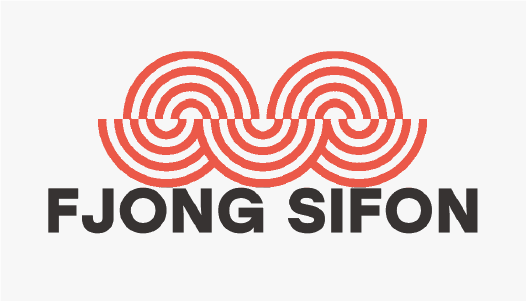
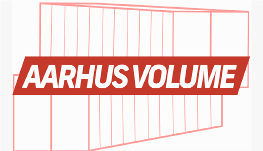
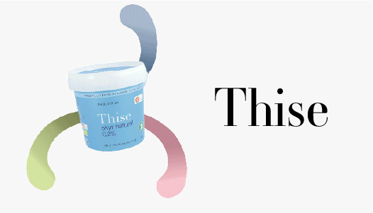

I like to work like an orchestra :
when everyone is doing what
they're best at, we create
sweet harmony.
I am a 22 year old UX/UI designer from Aarhus, Denmark.
I study multimediadesign at Business Academy Aarhus
and are currently on my 3. semester.
I love what i do and i aspire to be really good at it.
I have worked through school cases with a multitude of every-day clients
and made designs in my spare time with focus on great UX/UI.
You might be the next person i work with so i hope
we, together, can reach great success.
I am educated in the process from
interviewing users to developing
solutions tailored to
the users needs and
your business goals.
I have gained valuable experience in
project management and
programming positions.
This gives me insight in translating
design features with
HTML, CSS and Javascript.
I aim to create
elegant solutions that entices
people to interact.
I design in adobe and have experience
in many prototyping tools
I am proud of
these projects.
These are selected prototypes that tell
you about what type of UX/UI designer i am.
Fjong Sifon Magazine
Aarhus Volume website
Thise product site "skyr"
